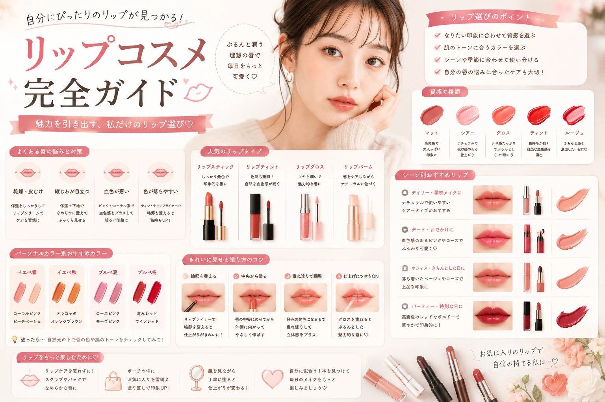

初心者向けベースメイク完全ガイド
ベースメイクの基本から 自然に仕上げるポイントまで紹介。

キレイは、日常の積み重ね。
色・質感・使い方まで。
初心者でも自分に合う
リップを見つけやすくなる
基本をわかりやすく紹介します。

リップは、
顔全体の印象を手軽に変えられる
メイクアイテムのひとつです。
ナチュラルなメイクに合わせたり、
しっかり色を出して
存在感をプラスしたり、
その日の気分やファッションに合わせて
楽しむことができます。
ただし、
リップには色や質感、
仕上がりの違いがたくさんあります。
「どれを選べばいいかわからない」
という初心者の人は、
まず基本的な違いを知るところから
始めてみましょう。

リップは色や質感によって仕上がりの印象が変わります
リップ選びでは、
自分が好きだと思える色や
挑戦してみたい色を
楽しむことも大切です。
肌の印象やメイクとの相性だけに
とらわれすぎず、
自分が使いやすい色から
少しずつ試してみましょう。
リップコスメには、
さまざまな形状や仕上がりがあります。
まずは代表的なタイプを知って、
自分が好きな使い心地や
仕上がりを探してみましょう。
スティック状で
直接塗りやすいタイプ。
色や質感の種類が豊富で、
メイクの仕上がりに合わせて
選びやすいのが特徴です。
ツヤ感のある仕上がりを
楽しみたいときに
取り入れやすいアイテム。
単体で使ったり、
リップの上から重ねたりできます。
色づき方や仕上がりが
商品によって異なるタイプ。
発色や色の残り方などを
商品説明で確認して
選びましょう。
唇を整える目的などで
使用されるアイテム。
色付きタイプなどもあり、
ナチュラルなメイクにも
取り入れやすい商品があります。

リップを選ぶときは
色だけではなく、
どのような質感に仕上がるのかも
チェックしてみましょう。
同じような色でも、
ツヤ・マット・透け感などによって
メイク全体の印象が大きく変わります。

みずみずしい印象を
作りたいときに
取り入れやすい質感。
ナチュラルメイクにも
合わせやすいタイプがあります。
ツヤを抑えた
落ち着いた印象に
仕上げたいときに
向いています。
大人っぽいメイクにも
取り入れやすい質感です。
透け感のある
ナチュラルな仕上がり。
リップ初心者でも
色の濃さを調整しやすい
商品があります。
ツヤとマットの
中間のような質感の商品もあります。
商品によって仕上がりが異なるため、
実際の仕上がり画像なども
確認してみましょう。
「赤リップ」など色だけで選ぶのではなく、 ツヤ感やマット感などの仕上がりも 一緒に確認すると、 より自分の好みに近い商品を 探しやすくなります。
リップ選びで
特に迷いやすいのがカラーです。
ピンク、
コーラル、
レッド、
オレンジ、
ベージュ、
ブラウンなど、
同じ系統のカラーでも
発色や明るさによって
印象が変わります。

やわらかく 女性らしい印象に 仕上げたいときに 取り入れやすいカラー。
明るく健康的な印象の メイクに合わせやすい カラー系統です。
リップを主役にしたいときや、 はっきりした発色を 楽しみたいときに。
落ち着いた ナチュラルメイクに 合わせやすいカラー。
大人っぽく 落ち着いた雰囲気の メイクに合わせやすい カラーです。
明るく ポジティブな印象を 作りたいときに 取り入れやすいカラー。
リップの色は、 実際に塗ったときの発色が 商品画像と異なる場合があります。 購入前には公式の商品情報や 色見本なども確認しましょう。
リップを選ぶときは、 「色」だけで決めるのではなく、 いくつかのポイントを 一緒に確認してみましょう。
普段のナチュラルメイク用なのか、 特別な日のメイク用なのかなど、 使用するシーンを考えてみましょう。
自分が普段好きなカラーや 挑戦してみたいカラーを 考えてみましょう。
ツヤ・マット・シアーなど、 自分が好きな仕上がりを 選びましょう。
無理なく購入できる価格帯を あらかじめ決めておくと、 商品を比較しやすくなります。

迷ったときは、
「毎日使うリップ」
「学校・仕事用」
「お出かけ用」
など、
まず使う場面を決めてみましょう。
目的が決まると、
色や質感、価格帯なども
比較しやすくなります。
リップの色選びで迷ったときは、 パーソナルカラーを参考にしてみるのも ひとつの方法です。
ただし、パーソナルカラーは 「この色しか似合わない」という ルールではありません。 好きな色を楽しみながら、 選択肢のひとつとして 取り入れてみましょう。

自分が好きな色をベースに選ぶのもおすすめ
コーラル、 オレンジ、 ベージュ、 ブラウンなどの 暖かみを感じるカラーが 選択肢になります。
青みピンク、 ローズ、 モーヴなどの 涼しげな印象のカラーが 選択肢になります。
肌の色や顔立ち、 メイク全体によって リップの見え方は変わります。 気になるカラーがあれば、 パーソナルカラーだけで 最初から候補から外さず、 実際の色味を確認してみましょう。
リップは単体で見るだけではなく、 ベースメイクやチークなど 顔全体とのバランスを見ることも 大切です。
同じリップでも、 ベースメイクの色や チークのカラーによって 全体の印象が変わることがあります。

ベージュやピンクなど、 普段のメイクになじみやすい カラーから試してみましょう。
コーラルやオレンジなど、 明るさを感じるカラーを 選択肢に入れてみましょう。
ローズやブラウンなど、 落ち着いたカラーを 試してみるのもおすすめです。
発色のはっきりした レッドなどを使って、 リップをポイントにする方法もあります。
リップだけを変えるのではなく、 チークやアイメイクの色味も 一緒に確認すると、 メイク全体をまとめやすくなります。
学校や仕事、 普段のお出かけなど、 自然な印象に仕上げたいときは、 発色が強すぎないリップを 選択肢に入れてみましょう。

ベージュ、 ピンク、 コーラルなど、 普段のメイクになじみやすい 色を探してみましょう。
透け感のあるタイプなら、 色の濃さを調整しやすい 商品もあります。
ツヤのある仕上がりを選ぶことで、 ナチュラルなメイクに みずみずしい印象を プラスできます。
最初からしっかり塗るのではなく、 少量ずつ塗って色味を確認すると、 自分好みの発色に 調整しやすくなります。
学校や仕事など、 派手すぎないメイクをしたい シーンでは、 自然になじむカラーを 選ぶと使いやすいでしょう。

校則や学校のルールがある場合は、 それを確認したうえで リップを選びましょう。
職場の雰囲気に合わせて、 ベージュやピンクなどの なじみやすい色を 選ぶ方法があります。
毎日使うなら、 自分が使いやすく、 無理なく続けられる 色や質感を選びましょう。
リップを購入する前に、 「どこで使うか」を考えておくと、 色や質感を決めやすくなります。
普段より少し華やかなメイクを 楽しみたい日は、 リップをポイントにするのも おすすめです。
レッドやローズ、 深みのあるカラーなど、 普段とは違う色に 挑戦してみるのもよいでしょう。

服装やその日の雰囲気を考えて、 リップのカラーを選びます。
リップの発色が強い場合は、 アイメイクを控えめにするなど、 全体のバランスを調整します。
リップとチークの色味を 近い系統にすると、 メイク全体をまとめやすくなります。
リップをしっかり発色させたい日は、 アイメイクやチークを 少し控えめにすることで、 全体のバランスを取りやすくなります。
リップをきれいに仕上げたいなら、 カラーを塗る前の 唇の状態も確認してみましょう。

乾燥などが気になる場合は、 無理にメイクを続けず、 状態に合わせてケアしましょう。
必要に応じて、 普段使っているリップケアアイテムを 取り入れましょう。
唇の状態を確認してから、 使用する商品の方法に沿って カラーを塗ります。
リップケアアイテムを使用する場合は、 商品の使用方法や注意事項を 必ず確認しましょう。
リップは塗り方を少し変えるだけでも、 仕上がりの印象を変えられます。

最初から輪郭いっぱいに塗るのではなく、 唇の中央部分から 色をのせてみましょう。
中央にのせたカラーを 少しずつ左右へ広げていきます。
鏡で確認しながら、 色ムラがないように 少しずつ整えます。
もう少し発色させたい場合は 少しずつ重ねます。
一度にたくさん塗るよりも、 少量ずつ重ねながら 発色を調整すると、 初心者でも扱いやすくなります。
リップの中央を濃く、 外側に向かって薄く仕上げる グラデーションリップは、 やわらかな印象を楽しみたいときに 取り入れやすい方法です。

まずは唇の中央部分に リップカラーを少量のせます。
指やリップブラシなどを使って、 中央の色を外側へ 少しずつぼかしていきます。
濃い部分と薄い部分の境目を 自然になじませます。
最初から濃く塗るのではなく、 少量ずつ色を重ねながら 濃さを調整してみましょう。
リップを塗るときに、 唇の輪郭を少し意識するだけでも 仕上がりの印象を変えられます。

鏡を見ながら、 自分の唇の輪郭を 確認しましょう。
輪郭を大きく変えようとせず、 必要な部分に少しずつ 色をのせていきます。
正面から見て、 左右のバランスを確認します。
リップの輪郭を強く変えるのではなく、 自然な範囲で少しずつ調整するのが 初心者にも取り入れやすい方法です。
リップは、 食事や飲み物などによって 色の見え方が変化することがあります。
仕上がりをきれいに保ちたい場合は、 商品の特徴を確認しながら 使用方法を工夫してみましょう。

一度に大量に塗るのではなく、 少しずつ重ねて 発色を調整しましょう。
鏡で色ムラや 唇の端などを確認して、 必要な部分を整えます。
ティントなど、 商品によって使用方法が異なるため、 パッケージや公式情報を 確認して使いましょう。
リップは時間とともに 色の見え方が変わるため、 必要に応じて塗り直しましょう。
色持ちだけを重視するのではなく、 外出先でも簡単に塗り直せるか、 自分が使いやすいかも 商品選びのポイントになります。
リップは、 食事や飲み物などによって 色が薄くなることがあります。
色落ちが気になる場合は、 商品の特徴を確認したうえで、 塗り方や持ち歩き方を 工夫してみましょう。

商品ページやパッケージなどで、 色持ちや仕上がりについての 特徴を確認しましょう。
厚く塗りすぎず、 自分の好みの発色になるよう 少しずつ調整します。
外出時に塗り直せるよう、 使用するリップを ポーチに入れておくと便利です。
時間が経ったら、 色味を確認しながら 必要な部分だけ 付け直してみましょう。
商品によって仕上がりや色持ちは異なります。 「絶対に落ちない」と考えるのではなく、 自分の生活スタイルに合った リップを選びましょう。
リップはドラッグストアなどでも 手軽に探せるアイテムです。
店頭で選ぶときは、 価格だけではなく、 色・質感・使うシーンなどを 一緒に確認しましょう。

自分が無理なく購入できる 価格帯か確認しましょう。
商品の色名や色見本を確認し、 自分が使いたいカラーを 探してみましょう。
ツヤ・マット・シアーなど、 仕上がりの特徴を 確認しましょう。
使用前にパッケージなどを確認し、 正しい使い方を把握しましょう。
プチプラリップを選ぶときも、 「安いから」という理由だけではなく、 色・質感・使う場面などを考えて 自分に合う商品を探してみましょう。
リップは比較的手軽に試せる 価格帯の商品も多いため、 初心者がメイクを始めるときにも 取り入れやすいアイテムです。

いきなり何本も購入せず、 まずは自分が好きな色を 1本選んで試してみましょう。
使用頻度が高いカラーなら、 購入後も活用しやすくなります。
同じシリーズでも 色によって印象が変わるため、 色展開を比較してみましょう。
無理のない予算を決めて、 気になるカラーを 少しずつ試してみましょう。
プチプラだからといって 必ずしも自分に合うとは限りません。 商品の特徴を確認しながら、 価格と使いやすさの両方を 比較して選びましょう。
初めて購入するリップなら、 次のポイントを確認してから 選ぶと比較しやすくなります。
LIP CHECK
気になる項目を確認しながら、 自分に合うリップを探してみましょう。
外出中にリップの色が薄くなったら、 鏡で状態を確認してから 必要な部分だけ塗り直しましょう。

色が薄くなった部分や、 ムラになっている部分を 鏡で確認します。
余分なリップが気になる場合は、 ティッシュなどを使って やさしく整えます。
いきなり厚く塗らず、 少量ずつ重ねて 色味を調整します。
普段使いするリップを ポーチなどに入れておけば、 外出先でも必要なときに 簡単に塗り直せます。
リップだけで色を決めるのではなく、 アイメイクやチークとの バランスを考えると、 メイク全体をまとめやすくなります。

ピンクやベージュ、 コーラルなど、 普段のメイクになじみやすい カラーを選択肢に。
ピンクやローズなど、 やわらかな印象の カラーを合わせる方法があります。
ローズやブラウンなど、 落ち着いた色味を 取り入れてみましょう。
発色のあるカラーを使い、 アイメイクなどを 控えめにして バランスを取ります。
リップとチークの色味を 近い系統にすると、 メイク全体に統一感を 出しやすくなります。

やわらかく 女性らしい印象に まとめやすい組み合わせです。
明るく健康的な雰囲気の メイクに取り入れやすい 組み合わせです。
落ち着いた印象や 大人っぽい雰囲気を 作りたいときの選択肢に。
ナチュラルで 控えめな印象に 仕上げたいときに。
リップとチークを 同系色でそろえるだけでも、 全体をまとめやすくなります。 色の濃さまで同じにする必要はなく、 それぞれの発色を見ながら 調整してみましょう。
リップの色が決まったら、 アイシャドウなどの色味も 一緒に考えてみましょう。

リップとアイメイクの両方を 控えめにすると、 自然な雰囲気に 仕上げやすくなります。
リップを主役にしたい場合は、 アイメイクを少し控えめにして バランスを取ります。
リップとアイシャドウを 近いカラー系統で合わせると、 統一感のあるメイクを 作りやすくなります。
すべての色を強くするのではなく、 「どこを主役にするか」を決めると、 メイク全体を調整しやすくなります。
普段使う予定なら、 自分のメイクになじみやすい ピンク、ベージュ、 コーラルなどから 探してみるとよいでしょう。
ただし、 好きなカラーを選ぶことも 大切です。
どちらが正解ということはありません。 自分が好きな仕上がりや、 使用するシーンに合わせて 選びましょう。
プチプラにもさまざまな商品があります。 価格だけではなく、 色・質感・使用方法などを 確認して選びましょう。
本数に決まりはありません。 まずは普段使いしやすい 1本から始めて、 慣れてきたら用途や色の違う リップを増やしていく方法もあります。
リップは使用環境などによって 色の見え方が変化することがあります。 必要に応じて鏡で確認し、 塗り直しましょう。
少量ずつ塗って、 発色を確認しながら 重ねていくと 色の濃さを調整しやすくなります。
リップ選びで迷ったら、 まずは「どんなときに使いたいか」を 考えてみましょう。
学校・仕事・普段使い・ お出かけなど、 使う場面を決める。
好きな色や メイクになじみやすい色から 選ぶ。
ツヤ・マット・シアーなど、 好みの仕上がりを選ぶ。
自分の予算に合う 商品を比較する。
塗りやすさや 持ち歩きやすさなども 確認する。

リップは毎日のメイクを 手軽に変えられるアイテムです。 色や質感、価格などを比較しながら、 自分が無理なく楽しめる 1本を見つけてみましょう。